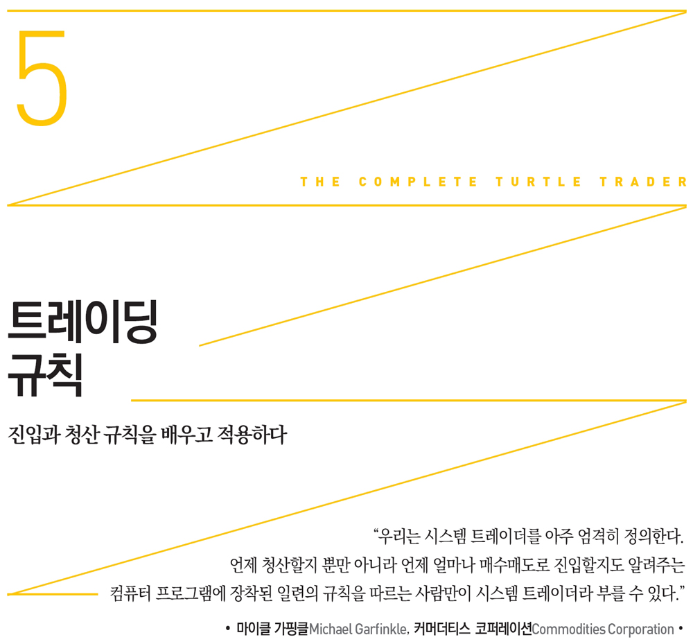
리처드 데니스와 윌리엄 에크하르트가 가르친 규칙들은 통계학 시간에 다루는 복잡한 것은 아니지만 수련생들은 두 가지 ‘오류’를 포함해 몇 가지 기초 통계는 배웠다.
타입 원 에러Type 1 error : 제1종 오류 또는 부정 오류라고 불린다. 가설이 사실인데도 이를 받아들이지 않고 기각하는 오류를 말한다.
타입 투 에러Type 2 error : 제2종 오류 또는 긍정 오류라 불리며 가설이 거짓인데도 이를 받아들이는 오류를 뜻한다.
터틀 수련생들이 매매할 때 이런 에러들이 주기적으로 나타난다면 결국에는 확실히 좋은 성과를 얻을 수 있다. 풀어 설명하자면 수련생들은 커다란 수익을 놓치는 것보다 작은 손실을 수차례 기록하는 것이 더 낫다고 배웠다. 통계적 오류의 개념에는 자신의 무지를 인정하면 트레이딩에 큰 도움이 된다는 뜻이 함축되어 있다.
리처드 데니스와 윌리엄 에크하르트의 통계적 사고의 근저에는 영국의 14세기 논리학자 윌리엄 오캄William Occam이 제시한 오캄의 면도날(복잡한 의견을 필요로 하지 않는 원리)이라는 개념이 깔려있다.
기댓값: 자신의 투자기법으로 장기적으로
수익을 얼마나 올릴 수 있는가?
“당신은 투자 결정이나 트레이딩 규칙에 따라 장기간 매매할 때 얼마의 평균수익을 기대하는가?” 이는 블랙잭 게임을 하는 사람에게 던지는 질문과 비슷하다. “당신의 승률은 얼마인가?” 터틀 수련생들은 먼저 자신의 승률부터 파악해야 했다.
야구에서 타석에 들어서는 타자에게도 같은 비유를 들 수 있다. 타자의 타율은 트레이더의 승률과 크게 다르지 않기 때문이다. 리처드 데니스는 다음과 같이 확장해 설명했다. “어느 타자의 타율이 2할 8푼인 것처럼 한 트레이더의 승률이 35퍼센트라고 가정합시다.”
이때 중요한 점은 타율이 2할 8푼인 타자가 어떤 안타를 치느냐이다. 1루타를 칠까? 아니면 홈런을 날릴까? 트레이딩에서도 기댓값이 높으면 더욱더 많은 돈을 벌 수 있다. 장기적으로 다른 조건이 똑같다면 매매 건마다 평균 250달러를 버는 트레이딩 시스템은 평균 100달러를 버는 시스템보다 더 많은 수익을 거둘 수 있다. 터틀 수련생들의 트레이딩 규칙은 기댓값이 플러스다. 매매 시 기록하는 평균 수익이 평균 손실보다 몇 배나 더 많기 때문이다. 에지edge라 부르기도 하는 기댓값은 다음과 같이 간단히 계산한다.
E=(PW×AW)-(PL×AL)
여기서
E=기댓값 또는 에지
PW=이익을 거둘 확률
AW=평균 이익금액
PL=손실을 기록할 확률
AL=평균 손실금액
예를 들어 이익을 거둘 확률이 50퍼센트인 트레이딩 시스템이 있다고 가정하자. 그리고 평균 이익금액은 500달러인 반면 평균 손실금액은 350달러라고 치자. 그러면 이 시스템의 ‘기댓값’은 얼마일가?
기댓값=(PW×AW)-(PL×AL)
기댓값=(0.5×500)-(0.5×350)
기댓값=250-175
기댓값=$75 (매매 시 평균적으로 기대할 수 있는 수익)
위 사례에서 매매 건마다 평균 75달러의 수익을 기대할 수 있다. 비교를 위해 이익을 거둘 확률이 고작 40퍼센트이고 이익을 거둘 때의 평균 이익금액이 1000달러, 손실을 기록할 때의 평균 손실금액이 350달러인 다른 시스템이 있다고 하자. 그렇다면 이는 앞 시스템과 어떻게 다를까?
기댓값=(PW×AW)-(PL×AL)
기댓값=(0.4×1,000)-(0.6×350)
기댓값=400-210
기댓값=$190 (매매 시 평균적으로 기대할 수 있는 수익)
두 번째 시스템은 앞 시스템보다 승률이 훨씬 낮지만 기댓값은 두 배 반이나 높다. 사실 둘째 시스템의 손익분기 승률은 25.9퍼센트다. 반면, 첫 시스템의 손익분기 승률은 41.1퍼센트다. 여러분들은 언론이나 카메라 앞에서 ‘승률이 90퍼센트’라고 떠드는 얘기를 많이 들었겠지만 이는 분명 오해의 소지가 있다. 승률만 봐서는 의미가 없다.
라스베이거스의 카지노를 예로 들어보자. 이곳 카지노들은 기댓값은 작지만 플러스이기 때문에 망하지 않는다. 라스베이거스나 마카오에 있는 초대형 카지노들은 플러스 기댓값으로 먹고 사는 것이다. 리처드 데니스도 ‘카지노’처럼 항상 플러스 기댓값을 원했다.
수련생들이 개별 매매 시 얼마나 적게 손실을 기록하는지는 그리 중요하지 않았다. 하지만 전체 포트폴리오에서 얼마나 잃을 수 있는지는 미리 파악해야 했다. 윌리엄 에크하르트는 분명히 강조했다. “중요한 것은 포트폴리오의 위험한도 관리입니다. 그러면 알아서 잘 굴러갑니다.”
실전매매TIP
매매결정을 내릴 때마다 기댓값을 계산해야 한다. 기댓값을 모르면 ‘베팅’하지 마라. 맞출 확률도 중요하지만 맞췄을 때 수익을 얼마나 많이 내는지가 더 중요하다.
여러 터틀 수련생과 터틀 방식으로 투자하는 운용회사의 성과를 여러 지수 수익률과 비교하면 기댓값이 얼마나 중요한지 알 수 있다.
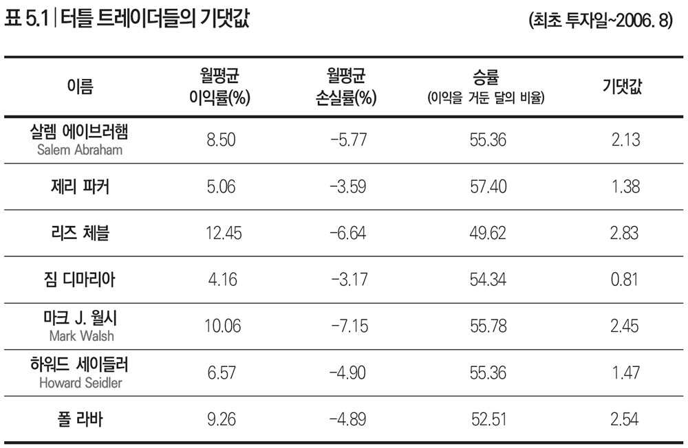
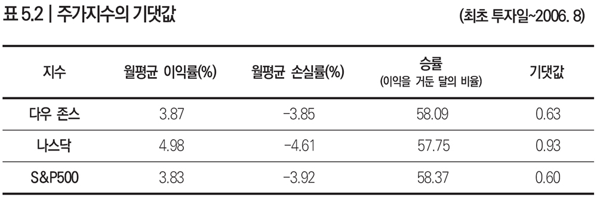
추세추종 트레이더들의 기댓값은 주가지수에 투자해 계속 보유하는 경우의 기댓값을 대부분 능가했다. 비결은 무엇이었을까? 이익을 거둔 달의 평균 수익률이, 손실을 기록한 달의 평균 손실률보다 훨씬 더 높았기 때문이다.
진입과 청산 : ‘랠리에 올라타는 전략은 늘 좋다’
모든 사람이 이런 질문을 던진다. “언제 매수해야 하는지 어떻게 아나요?” 터틀 수련생들은 ‘돌파’ 시점에 진입하라고 배웠다. 돌파는 어느 시장(시스코, 금, 엔화 등)에서든 최근 고점과 저점을 ‘뚫을’ 때 나타난다. 수련생들은 어느 주식이나 선물계약이 55일 고점을 상향 돌파하면, 즉 현재 가격이 최근 55일 중 가장 높으면 매수한다.
반대로 55일 저점을 하향 돌파하면, 즉 현재 가격이 최근 55일 중 가장 낮으면 시장 하락에 따른 수익을 얻을 목적으로 매도한다. 이 단순한 진입 규칙만 보면 특별할 것이 없다. 터틀 수련생들의 투자 철학은 시장이 상승할 때 (가격이 더욱 비싸질 때) 매수하고 시장이 하락할 때 (가격이 더욱 저렴해질 때) 매도하는 방식이었다.
월가에서는 통상 “싸게 사서 비싸게 팔라”고 말하지 않았던가? 터틀 수련생들의 투자 방식은 이와 정반대다! 프로든 초보든 대부분이 하는 투자 방식과는 달리 이들은 하락하는 시장에서도 적극적으로 ‘매도 또는 공매도’를 함으로써 수익을 내려 했다. 이들은 매수 진입이든 매도 진입이든 상관없이 매매했다.
돌파가 진입 신호이기는 하지만, 돌파 신호가 나왔다고 해서 꼭 추세가 지속된다는 뜻은 아니다. 터틀 철학은 가격이 언제든 다른 방향으로 돌아설 수 있다는 점을 인식하고 가격 움직임에 순응하는 방식이다. 만약 시장이 크게 오르내리지 않고 옆걸음하면 돌파 신호를 보고 진입한 포지션에서 조금씩 손실이 발생하는 경우가 많이 생길 수 있다. 하지만 수련생들은 돌파 신호가 큰 추세로 이어질 때까지 기다렸다.
어쨌든 가격은 지난 수십 년 동안 위대한 투자자들이 목숨 걸고 매달리는 변수다. 간단한 ‘가격’ 변수보다 더 복잡하게 만든 매매규칙은 늘 문제가 있었다. 윌리엄 에크하르트는 가격보다 더 나은 변수는 없다는 것을 잘 알고 있었다. “순전히 가격을 활용하면 최고의 수익을 거둘 가능성이 커지는 반면, 그렇지 않으면 손실을 기록할 확률이 높아집니다.”
실전매매TIP
매매결정을 내릴 때 가격 변수가 유용하다는 사실이 명백해졌으므로 이제부터는 TV를 보지 마라! 경제 뉴스도 읽지 마라. 매매하려는 시장의 시가, 고가, 저가, 종가를 추적하기 시작하라. 이것들이야말로 모든 매매결정을 내리는 데 필요한 핵심 데이터다.
실전매매TIP
‘하락하는 시장에도 베팅’할 수 있어야 한다. 다시 말하자면, 하락하는 시장에서도 돈 버는 기회를 찾아야 한다. 이는 터틀 수련생들만의 특별한 전략이 아니다. 이들이 이를 효과적으로 활용했을 뿐이다.
터틀의 두 시스템: 시스템1과 시스템2
터틀 수련생들은 두 가지 돌파 ‘시스템’을 배웠다. 시스템1(S1)은 4주간 가격이 돌파되었을 때 진입하고 이와 반대 방향으로 2주간 가격이 뚫렸을 때 청산하는 전략이었다. 예를 들어 시장이 최근 4주 최고치를 넘어서면 매수하고 이후 2주 최저치를 하향 돌파하면 빠져나온다. 날수는 영업일로만 계산하므로 2주 최저치는 10거래일 최저치를 뜻한다.
수련생들은 간단한 시스템1을 보완하는 추가 규칙도 배웠다. 이는 4주 돌파 신호에 진입해야 할지 말지를 확인해주는 규칙이었다. “필터”라 불리는 이 규칙은 4주 돌파 신호가 나왔을 때 큰 추세에 올라탈 수 있는 확률을 높이도록 고안되었다.
필터 규칙 : 최근에 4주 돌파 신호를 보고 진입해 이익을 거두었다면 다시 나타난 4주 돌파 신호인 시스템1은 무시된다. 최근에 4주 돌파 신호가 나타났지만 실제로 진입하지 않아 그냥 ‘이론적’으로만 맞는 신호로 드러날 때에도 시스템1 돌파 신호는 무시된다. 하지만 새로 나온 4주 돌파 신호 이전의 거래에서 2N의 손실을 기록했다면 4주 돌파 신호를 받아들이고 매매한다. (단순히 변동성을 뜻하는 N에 대해서는 다음에 설명한다.)
더불어 4주 돌파 규칙인 시스템1에 적용되는 필터 룰은 방향성에 상관없이 적용된다. 예컨대 최근 쇼트로 진입해 손실을 기록한 경우 새로 나온 돌파 신호가 상방이든 하방이든 관계없이 진입한다.
그렇지만 필터 규칙에도 문제점이 내재한다. (S1 신호에 따라 진입한 이전 매매가 ‘이익을 낸’ 거래여서) 필터 규칙에 따라 새로 나온 4주 돌파 신호를 무시했는데 무시한 돌파 신호가 위 또는 아래로 폭발적으로 움직여 엄청난 수익을 주는 큰 추세로 이어진다면 어찌할 것인가? 시장은 뻗어 가는데 가만히 있을 수는 없지 않은가!
수련생들이 4주 돌파 신호인 시스템1에 진입하지 않았는데 시장이 계속 추세를 이어간다면 11주 돌파 신호인 시스템2(아래 참조)에 진입하면 된다. 오류를 잡아주는 시스템2 돌파 신호는 필터 룰로 걸러진 큰 추세를 놓치지 않도록 해준다.
시스템2는 터틀 수련생들의 장기 트레이딩 시스템이다. 이 시스템은 진입은 11주(55거래일) 돌파 신호를, 진입 후 반대 방향으로의 청산은 4주(20거래일) 돌파 신호를 썼다.
실전매매TIP
가격 “돌파”는 ‘X' 기간 중 이제 막 새로운 고점이나 저점을 기록한 시장을 뜻하는 수련생들의 용어다. 20일이나 55일이 아닌 다른 거래일을 사용해도 될까? 물론이다. 선호에 따라 얼마든 다른 거래일수를 적용할 수 있다. 원하는 거래일수를 종이나 (wealth-lab.com이나 mechanicasoftware.com 같은) 트레이딩 프로그램에 적용해 시험하다 보면 굴곡을 겪으면서 자신감도 얻을 것이다. 대체로 터틀 수련생들은 자금을 반반씩 나눠 두 시스템에 적용해 투자했다.
각 수련생은 리처드 데니스와 윌리엄 에크하르트가 제공한 시스템1과 시스템2를 자유롭게 선택해 활용할 수 있었다. 마이크 카는 두 시스템을 결합해 더욱 자주 진입하고 청산할 수 있도록 했다. 그러면서 트레이딩 결과가 들쭉날쭉하지 않도록 힘썼다.
제프 고든은 시스템1을 선호했지만 고른 투자성과를 위해 시스템2도 혼용했다. 아울러 다른 수련생들과 마찬가지로 시스템3으로도 매매했다. 고든의 설명에 따르면 이는 리처드 데니스의 작품으로 수련생들이 투자원칙을 지키고 규칙에서 벗어나지 않도록 가르치기 위한 것이었다. 그러면서 이렇게 덧붙였다. “마음대로 매매할 수 있는 시스템이었지만 손실 한도가 5만 달러였습니다. 손실이 5만 달러에서 1달러만 넘어도 터틀 프로그램에서 퇴출되는 구조였습니다.”
리처드 데니스는 시스템3을 직감에 의존하는 공포의 계좌라 불렀다. 얼 키퍼는 이 시스템이 자리 잡지 못한 이유를 알았다. “마음대로 매매할 수 있도록 하는 이 시스템을 모두가 조금씩은 활용했지만 6주 뒤에는 아무도 거들떠보지 않았습니다.”
수련생들이 열 번 투자해 일곱 번 손해 보는 것에 이미 심리적으로 익숙해졌기 때문이었다. 그들은 그것이 올바른 마음가짐이라는 사실을 알고 있었다. 얼 키퍼가 단호하게 말했다. “그래야만 진짜 추세를 잡을 수 있습니다. 실제 목격도 했고요. 《이기기 위한 역추세 매매Counter Trend Trading to Win》라는 제목의 책 내용 중 쓸모 있는 부분이 있는지 잘 모르겠습니다.”
실전매매TIP
돌파 신호에 적용하는 기간을 여러 가지로 시험해보라. 아울러 특정 기간에 매달리지 마라. 기간을 정했으면 일관되게 밀고나가는 것이 핵심이다. 시험하고 활용해봐야 신뢰가 생긴다. 믿되 검증하라.
세월이 흐른 뒤 터틀 규칙을 아는 트레이더들 중 시스템1과 시스템2에 적용하는 진입 및 청산 관련 돌파 기간을 마치 성배인 양 고집하는 사람들이 있는 것은 놀라운 일은 아니다. 돌파 기간에 매달리는 트레이더들은 숲을 보지 못하고 나무만 본 꼴이다. 터틀 트레이딩 시스템이 제대로 작동하려면 아주 간단한 진입 규칙이 계속 들어맞아야 한다. 50일 돌파 신호와 51일 돌파 신호 중 무엇이 더 나은지 따져봐야 의미가 없다. 사실 견고한 시스템이라면 변수를 조금 바꾼다고 해서 성과가 크게 달라져서는 안 된다. 성과가 크게 바뀐다면 그 시스템은 문제가 있는 것이다.
제리 파커는 ‘견고함’을 가장 중요하게 여겼다. “시스템을 간단하게 유지하는 게 중요하다고 생각합니다. 변수가 많아서는 안 됩니다. 우리가 돈을 벌 수 있는 이유가 무엇일까요? 바로 간단한 이동평균을 활용했기 때문입니다. 좋을 성과를 내기 위해서는 간단한 시스템을 계속 밀고 나가야 합니다.”
제리 파커는 논거를 분명히 하기 위해 마운트 루카스 매니지먼트 인덱스Mount Lucas Management Index를 활용했다. 1960년대로 거슬러 올라가는 이 지수는 52주 이동평균을 이용하는 추세추종 인덱스다. 제리 파커는 이 지수의 핵심 개념을 잘 활용하면 좋은 성과를 낼 수 있다는 사실을 잘 알고 있었다.
“우리가 올린 전체 이익의 3분의 2는 이 핵심 개념 덕분입니다. 조금 더 일찍 진입하고 청산하는 필터나 변동성 필터 같은 자잘한 변수에 의존해 수익을 올리는 시스템이라면 결국에는 실패로 끝나고 맙니다. 단순한 이동평균이나 돌파 시스템으로 중심을 잡는 것이 핵심입니다. 매개 변수들을 길게 설정하는 것도 중요합니다. 하지만 너무 복잡하게 생각하고 깊이 분석하거나 과도하게 멋지게 꾸미면 오히려 더 나빠집니다.”
돈을 벌려면 복잡하게 접근해야 한다고 허세를 부리는 시장 ‘전문가’들은 단순해야 한다는 제리 파커의 요지를 이해하지 못한다. 이들은 양자물리학처럼 아주 복잡한 매매규칙을 만들고 싶어 한다. 하지만 이런 생각은 정신적 자위행위나 마찬가지다. 에드워드 세이코타Ed Seykota는 이를 “매스-터베이션math-turbation(수학math과 자위행위masturbation를 결합한 말로 자기만족을 위해 수학처럼 복잡하게 만든다는 의미-옮긴이)”이라고 비꼬았다.
1995년 9월 만기 엔 선물 차트를 보면서 시스템 1이 어떻게 작동했는지 살펴보자.
1995년 초 시장은 다시 최근 4주 최고치 ‘돌파’했다. 그 뒤 계속 오르다 4월 말 반대쪽으로 최근 2주 최저치 돌파 신호가 나오자 수련생들은 포지션을 정리했다
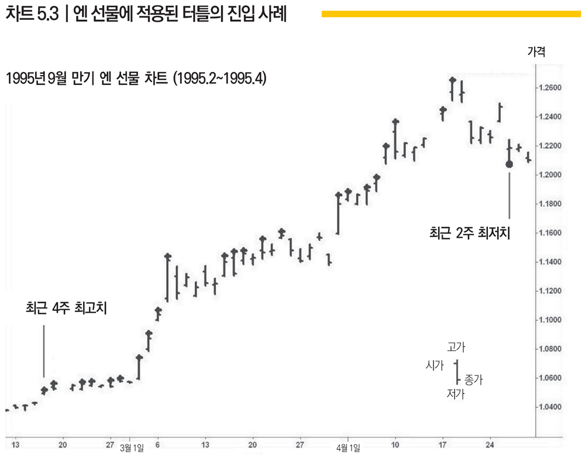
1995년 9월 만기 엔 선물가격은 1995년 2월 16일에 최근 4주 최고치를 경신했다. 터틀 수련생들은 규칙대로 다음 영업일에 진입했다. 이후 최고치가 계속 경신되는 동안 포지션을 유지하다 최근 2주 최저치를 보인 4월 26일에 청산했다. 출처: Price-Data.com
이처럼 규칙에 따른 훌륭한 트레이딩 사례는 리즈 체블의 초창기 거래에서도 볼 수 있다. 그녀는 1990년 7월 원유 선물 350계약을 배럴당 20달러 밑에서 매수한 뒤 40달러를 넘어설 때까지 계속 붙들고 있었다. 1990년 10월 15일 배럴당 38달러에서 청산하기 시작해 30달러를 조금 넘어선 수준에서 모두 정리했다. 평균 매도 가격은 34.8달러였다.
리즈 체블은 위 거래를 하는 동안 석유수출국개발기구OPEC 보고서나 다른 기본적 분석 자료는 전혀 참고하지 않았다. 진입과 청산은 오로지 가격만 보고 결정했다. 여기서 중요한 점은 터틀 수련생들은 항상 시장이 반대쪽으로 돌아선 뒤에 정리했기 때문에 평가이익을 일부 토해내야 했다는 사실이다. 바닥이나 꼭지를 정확히 알 수 없기 때문에 추세의 ‘중간’ 부분에서 거래를 완료하는 것이 목표였다.
이런 트레이딩을 경험함으로써 터틀 시스템을 더욱 신뢰하게 된 리즈 체블은 이렇게 상기했다. “1987년 은 선물 거래에서 800만 달러를 벌었다가 단 몇 분 만에 400만 달러를 토해낸 적이 있습니다.” 이 교훈 덕분에 원유 선물가격이 30달러에서 25달러로 떨어지는 동안 포지션을 계속 유지할 수 있었다.
다음 차트 5.4의 2005년 11월 만기 천연가스 선물 거래 사례를 살펴보자.
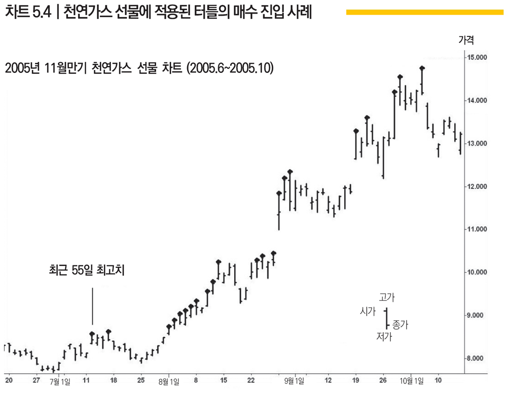
2005년 11월 만기 천연가스 선물가격은 2005년 7월 12일에 최근 55일 최고치를 경신했다. 이후 2005년 10월 5일 꼭지를 찍을 때까지 고점을 계속 경신했다. 출처: Price-Data.com
차트에서 각 점은 최근 55일 최고치를 나타낸다. 첫 최고치 돌파는 2005년 7월 중순에 발생했다. 이 돌파 후 추세가 계속될지 알 길이 없었지만 실제로 상승세가 이어져 수련생들은 추세에 올라타 큰돈을 벌었다.
하지만 돌파 신호에 따라 진입한 거래는 언제든 손실로 끝날 수 있다. 실제 거짓 돌파 신호가 연이어 나오면 계속 돈을 잃을 수 있다. 필립 루Philip Lu는 늘 다음과 같이 말했다. “손실을 기록하면 이렇게 중얼거립니다. ‘괜찮아, 규칙대로 했을 뿐이야.’” 그렇다. 규칙을 준수한다는 말은 손실을 볼 수 있다는 뜻이기도 하다. 추세추종 트레이더인 래리 하이트Larry Hite는 전부터 다음과 같이 말했다. “세상에는 네 가지 베팅이 있습니다. 좋은 베팅과 나쁜 베팅, 이익을 내는 베팅과 손실을 보는 베팅뿐입니다.”
손실을 다루기란 결코 쉽지 않다. 장기적으로 수익을 올리기 위해 적은 손실을 많이 감내한 제리 파커가 이렇게 조언했다.
“우리는 손실을 적게 냈다고 말하는 경향이 있지만 사실은 적절한 선에서 손절했다는 표현이 더 옳다고 봅니다. 너무 큰 손실을 기록해도 안 되고, 쫓겨나기 직전에 손절해도 곤란합니다. 규칙대로 매매하면서 침착함을 유지해야 합니다. 큰 수익을 올리지 못해도 괜찮고 작은 손실을 봐도 상관없습니다. 꽤 큰 수익을 올렸다가 토해내도 큰 문제가 아닙니다. 계속 원칙대로 하다가 엄청난 수익을 올렸을 때에는 공격적으로 해도 됩니다.”
2006년 12월 만기 유로달러 거래도 터틀 매매규칙을 성공적으로 실행한 좋은 사례다. 하지만 이는 하락장에서 수익을 올린 케이스다. 즉, ‘매도 진입’ 기회가 나타났다. 차트에서 각 점은 55일 최저치를 나타낸다. 2006년 2월 첫 ‘하향’ 돌파 신호가 발생한 뒤 6월 최저점에 도달할 때까지 계속 떨어졌다.
유로달러 선물 차트에 나타난 최근 20일 청산 신호를 보면서 전체 거래 상황을 살펴보자. 2월에 첫 ‘매도’ 진입 신호가 나왔지만 3월 중순에 최근 20일 최고치가 경신되면서 포지션이 정리되었다. 첫 진입 신호는 작은 손실로 끝났다.
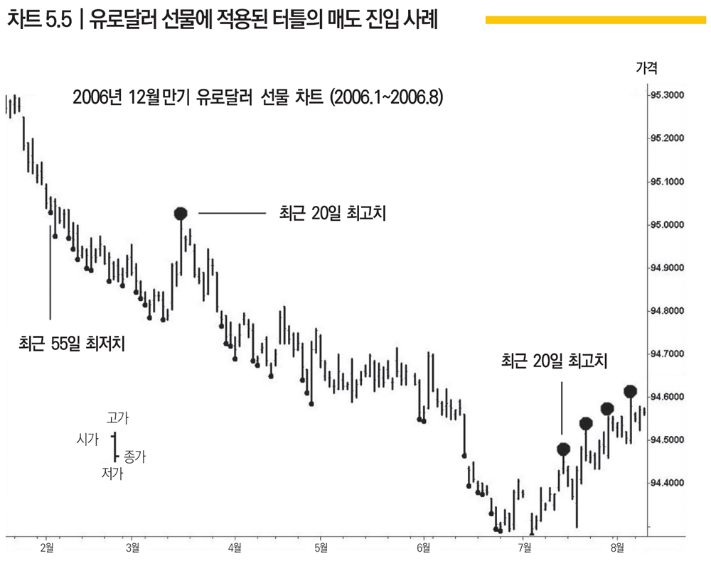
2006년 12월 만기 유로달러 선물가격은 2006년 2월 20일에 최근 55일 최저치를 경신하며 진입 신호가 나타났다. 이후 시장은 2006년 3월 16일 최근 20일 최고치를 찍기 전까지 조금 더 내려갔다. 이로써 매도 포지션은 손실로 청산되었다. 하지만 2006년 3월 29일 최근 55일 최저치가 나타나면서 다시 매도 포지션으로 진입했다. 그 뒤 2006년 7월 14일 최근 20일 최고치로 청산 신호가 나타날 때까지 계속 떨어졌다. 출처: Price-Data.com
그렇지만 시장이 계속 하락하면서 3월 말 매도 진입 신호가 다시 나타났다. 수련생들은 쇼트 포지션에 재진입했다. 이후 7월에 최근 20일 최고치가 돌파되면서 포지션을 최종 청산했다. 이 돌파 신호들은 차트에서 조금 더 큰 점으로 표시되어있다. 두 번째 매매에서 거둔 이익은 첫 번째 거래에서 기록한 손실을 만회하고 남았다.
이것이 규칙이다. 즉 수련생들은 첫 돌파 신호에 진입해 손실을 기록했다고 해서 다음 돌파 신호를 무시해서는 안 된다. 다시 말에 올라타야 한다. 두 번째 돌파 신호가 나타나기를 기다렸지만 언제 발생할지 예측할 방법이 없었다.
트레이딩은 얼마나 참고 기다리느냐 하는 게임이다. 얼 키퍼는 수련생들의 통상적 매매 절차를 다음과 같이 간단명료하게 설명했다. “첫째, 몇 가지 필터가 가미된 돌파 신호를 씁니다. 둘째, 변동성을 감안해 투자 규모를 결정합니다. 셋째, 모든 거래에는 두 가지 하드 스톱이 있습니다. 하나는 자연적 청산이고 다른 하나는 확실한 하드 스톱입니다. 이것이 모두를 구하는 원칙입니다. ‘추세가 언제 나타날지 알 수 없기 때문에 늘 원칙을 지켜야 한다’는 것이 리처드 데니스 시스템의 본질입니다.”
무작위적 진입
위로든 아래로든 돌파 신호가 나타났을 때 다음에 시장이 어떻게 움직일지 전혀 알 수 없다. 단기간 올랐다가 내려가 손해가 날 수도 있고 갑자기 상승해 큰 이익을 거둘 수도 있다.
윌리엄 에크하르트는 ‘좋은’ 진입 시점을 포착하기 위해 엄청난 시간을 쏟아붓는 시스템 트레이더들을 수없이 보았다. 하지만 그는 이를 경계해야 한다고 말한다. “매매할 때 가장 좋은 시점을 찾으려는 노력은 인간의 본성인 듯합니다. 그렇지만 저희들 분석에 따르면 청산이 진입보다 훨씬 더 중요합니다. 아무 때나 진입했다 하더라도 청산 기준이 좋으면 놀라우리만큼 좋은 성과를 거둘 수 있습니다.”
실제로 리처드 데니스는 수련생들로 하여금 아무 때나 진입하게 한 후 포지션을 잘 관리하도록 훈련했다. 터틀들에게는 이것이 선(禪) 수련 같은 느낌이었다. 위험관리를 제대로 하면 매매 시 나타날 수 있는 최악의 상황에 대응할 수 있다.
실전매매TIP
어떻게 진입할지에만 매달리지 마라. 항상 청산 시점이 가장 중요하다.
위험관리: 거래 건마다 얼마를 투자해야 하나?
위험관리는 여러 이름으로 불린다. 자금관리라 칭하는 이도 있고 투자 규모나 포지션 크기라고 말하는 사람들도 있다. 윌리엄 에크하르트가 수련생들에게 처음으로 가르치고 궁극적으로 가장 중요하다고 강조했던 개념이 바로 위험관리다.
터틀 수련생들은 위험관리를 시장의 일일 변동성 측정에서부터 시작한다. 이들은 변동성을 ‘일일 변동폭’으로 측정하도록 배웠다. ‘N’이라는 별명으로 불리는 변동성은 ATRAverage True Range(실변동폭의 이동평균)라고도 한다. 다음 셋 중 가장 큰 값이 ‘N’이다.
1. 오늘의 고가와 저가 차이(TR1)
2. 어제의 종가와 오늘의 고가 차이(TR2)
3. 어제의 종가와 오늘의 저가 차이(TR3)
위 값이 음수이면 ‘절댓값’을 취한다. 수학에서 실수의 절댓값은 수의 눈금을 새긴 직선에서 0과 어느 숫자 사이의 거리다. 예를 들어 3은 +3의 절댓값이기도 하고 -3의 절댓값이기도 하다.
위 세 가지 계산값 중 가장 큰 수치가 ‘실변동폭’이다. 이는 24시간 동안 시장이 (위로든 아래로든) 움직인 폭의 절댓값이다. 터틀은 이 실변동폭의 20일 이동평균값을 썼다. 이는 거래하는 각 시장의 최근 몇 주간의 변동성을 보여준다.
실전매매TIP
주식시장이든 선물시장이든 실변동폭의 이동평균을 얼마든지 계산할 수 있다. 지난 15일 각각에 대해 실변동폭을 구한 뒤, 이를 모두 더한 다음 15로 나눈다. 이를 날마다 계산하면서 이동평균 값을 구한다. 소프트웨어 패키지를 쓰면 자동으로 계산해준다.
윌리엄 에크하르트는 ‘N’의 숨은 의미를 이렇게 설명했다. “우리는 변동성을 이동평균값으로도 쓸 수 있다는 사실을 알아냈습니다. 진입 포지션 크기를 알려주는 변동성 요소를 트레이딩에 접목시킴으로써 어려울 때 위험에서 벗어날 수 있었고 시장이 우리 예상대로 움직일 때 큰 수익을 얻을 수 있었습니다.”
터틀 수련생들은 ‘N’을 여러 가지로 활용하도록 배웠지만 먼저 계산하는 방법부터 알아야 했다. 다음은 ‘N’을 계산한 사례다.
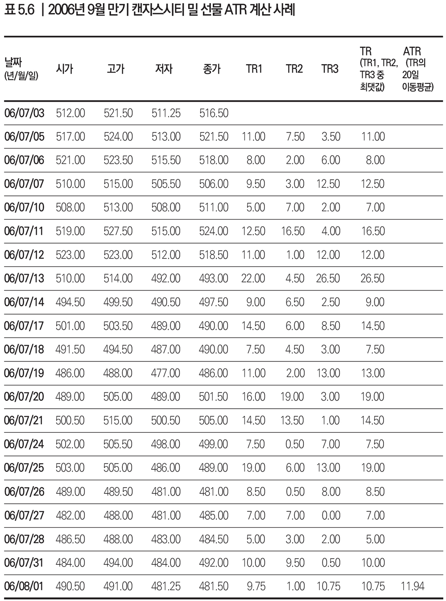
만약 옥수수의 ‘N’이 7센트이고 시장이 5.25센트 올랐다면 터틀 수련생들은 시장은 ¾N 상승했다고 표현했다. 따라서 ‘N’은 변동성 측정치이면서 동시에 시장이 추세를 따라 얼마나 멀리 움직였는지 보여주는 유용한 지표이기도 하다. 얼 키퍼가 터틀끼리 쓰는 용어를 빠르게 설명해주었다. “우리는 매매할 때 결코 “1,000달러를 투자합니다.”라는 식으로 말하지 않습니다. 저희는 늘 ‘N’에 견주어 생각하도록 배웠습니다. 예컨대 “½N만큼 투자합니다.”라는 식이죠. 만약 누가 “채권에 3,400만 달러 투자했습니다.”라고 말한다면 대부분의 사람들은 이 돈의 규모가 머릿속에 떠올라 이렇게 내뱉기 때문입니다. “와, 엄청나게 투자했군.” 누군가 “오늘 시장이 얼마나 움직였나요?”라고 물으면 “채권이 31틱 움직였습니다.”라고 답하지 말고 “1¼N 움직였습니다.” 라고 대답하라고 배웠습니다.”
다음 차트에는 델 컴퓨터의 차트 밑에 N값이 표시되어있다. ‘N’값이 바뀐다는 점에 주목하라. 이 값은 날마다 업데이트해야 한다. 실제 이 변동성 수치를 매일 업데이트한 윌리엄 에크하르트는 이렇게 밝혔다. “이는 제 일상입니다. 그러면서 1년에 두세 번 일중 값을 조정합니다.”
‘N’에 대한 감이 생기자 수련생들은 ‘얼마를 투자할지’에 대해 배웠다. 이들은 거래 건마다 전체 운용금액의 2퍼센트까지 투자할 수 있었다. 이를테면 10만 달러를 가지고 있다면 매매 때마다 10만 달러의 2퍼센트인 2,000달러를 베팅할 수 있다. 전체의 2퍼센트를 이들은 ‘유닛’이라 불렀다. ‘유닛’은 위험을 이야기하면서 일상적으로 쓰는 그들만의 용어였다.
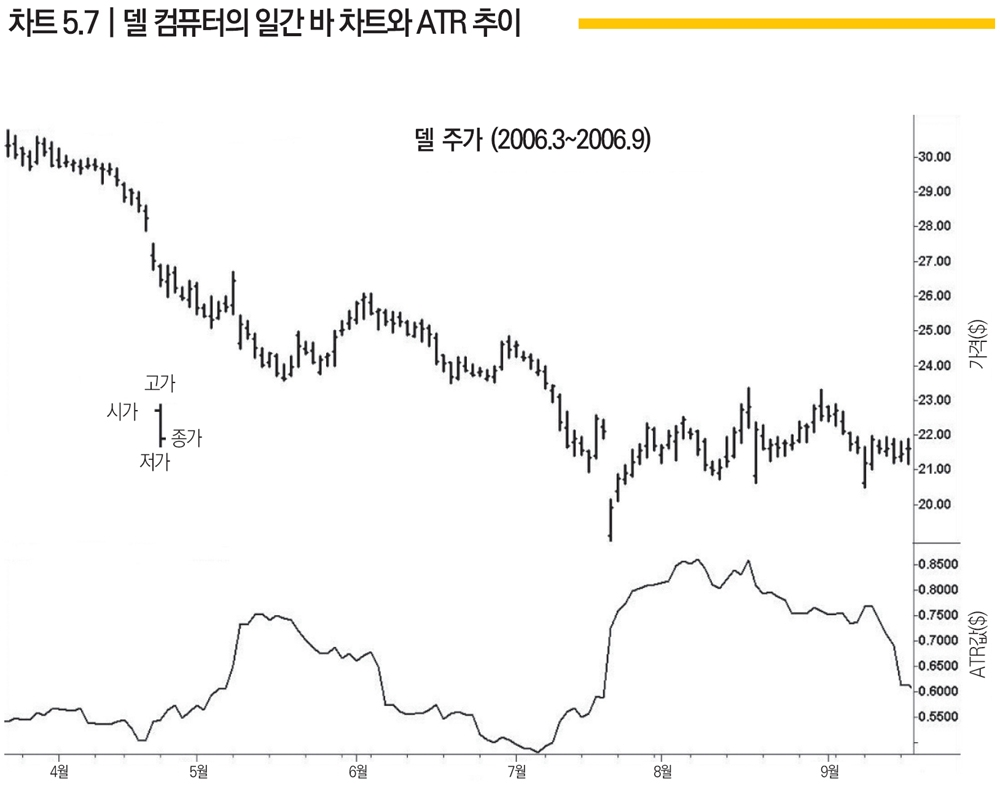
델 컴퓨터의 일간 가격 차트 밑에 ATR 달러값이 표시되어있다. 이 ATR값은 시장 등락에 따라 오르내린다. 출처: Price-Data.com
유닛 한도는 각 시장 섹터에도 전체 포트폴리오에도 적용했다. 매일 바뀔 수 있는 계좌 잔고에 따라 유닛이 정해지기 때문에 투자할 수 있는 선물계약 수도 날마다 달라졌다.
실전매매TIP
운용 규모가 얼마든 상관없이 여기에 2퍼센트를 곱하라. 예를 들어 10만 달러를 가지고 있으면 매매 시 이의 2퍼센트인 2,000달러를 베팅할 수 있다. 틀릴 경우를 대비해 처음에는 늘 적게 투자해야 좋다. 사실 시장 방향을 맞추지 못할 확률은 언제든 50퍼센트가 넘을 수 있다. 터틀 수련생들은 통상 전체 운용자금의 2퍼센트를 베팅했다. 하지만 여러분들은 이보다 적게, 가령 1.5퍼센트만 투자함으로써 기대수익은 낮아지지만 위험을 줄일 수 있다.
터틀의 위험관리는 손절, 추가 투자, 포트폴리오 전체의 위험 균등화까지 아우른다. 예컨대 옥수수 선물(1센트의 가치는 50달러다)의 ‘N’이 7센트면 위험 한도는 350달러(7센트×50달러)다. 터틀 수련생들이 2N으로 손절을 설정한 상태에서 돌파 신호가 나온다면 ‘계약 리스크’ 한도는 350달러 곱하기 2로 구한 700달러다.
투자자금이 10만 달러라면 ‘계좌 리스크’ 한도는 2,000달러(10만 달러의 2퍼센트)다. 사거나 파는 계약 수는 이 금액을 ‘계약 리스크’ 한도로 나눠 구한다. 즉 2,000달러를 700달러로 나눠 구한 2.67이 투자할 수 있는 계약 수다. 터틀은 소수점 이하를 절사했다. 그래서 10만 달러를 가지고 있는 상태에서 돌파 신호가 나왔을 때 옥수수 두 계약을 거래할 수 있다.
옥수수 선물에 적용한 이 규칙은 금이나 코카콜라 주식에도 마찬가지로 쓸 수 있다. 리처드 데니스는 기본적 분석을 할 수 있을 만한 전문성이 없었는데도 이런 ‘숫자들’을 활용해 어느 시장에서든 매매할 수 있었다. 이것이 바로 터틀 수련생들이 단 2주간 훈련받고 서로 관계가 없는 여러 시장을 넘나들며 트레이딩할 수 있었던 이유다.
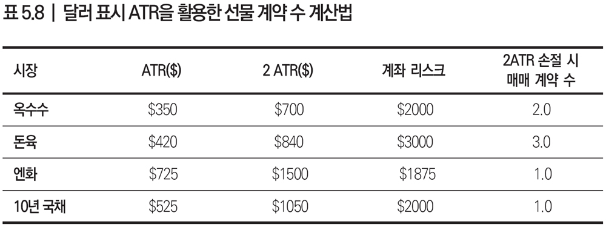
그렇지만 수련생들은 ‘N’을 변동성 측정뿐만 아니라 다른 곳에서도 쓰라고 배웠다. 즉, (처음에 언급한 S1, S2의 청산 규칙 같은) 기본적 스톱에도 활용했다. 이들은 손절 시 2N값을 적용했는데, 기본적 스톱 또는 하드 스톱을 일간 ‘N’값의 2배로 정했다는 의미다.
예를 들어 옥수수 선물에서 돌파 신호가 나왔고 종가가 250달러면 수련생들은 바로 ‘N’값을 계산해 손절 가격을 설정했다. 만약 ‘N’이 7센트면 2N은 14센트다. 따라서 스톱은 진입 가격에서 14센트 아래로 정해진다. 즉, 진입 가격이 250달러이므로 하드 스톱은 236달러(250-14)로 설정된다. 가격이 236달러에 ‘도달’하면 바로 청산한다. 이들은 고민할 것도 없이 그저 규칙대로 투자했다.
실전매매TIP
구글 주식을 거래하는데 ATR이 20이라고 하자. 그러면 2ATR(2N)은 40이다. 따라서 투자 후 40포인트 손실이면 망설임 없이 바로 청산해야 한다.
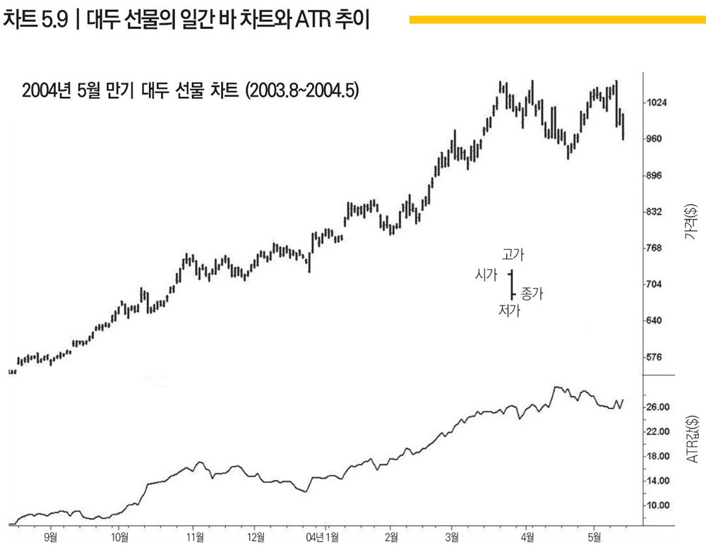
2004년 5월 만기 대두 선물은 추세 시작 시점에는 ATR값이 작았다. 터틀의 운용 규칙에 따르면 ATR값이 작을수록 투자할 수 있는 계약 수가 더 많아진다. 추세 끝부분에서는 ATR값이 아주 커져 보유 가능한 포지션 규모가 줄어들었다. 출처: Price-Data.com
한편, ‘N’값이 작으면 포지션을 더 많이 잡을 수 있다. 차트 5.9에 볼 수 있듯이 돌파 초기에 매수한 대두 선물 계약 수는 추세 끝 부분에서 매수할 수 있는 계약 수보다 2.5배 더 많다. 이는 시장 변동성과 유닛 크기 사이의 관계를 보여주는 아주 좋은 예다. ‘N’값이 작으면 거래할 수 있는 계약 수나 주식 수는 항상 더 늘어난다.
가장 좋은 추세는 초기의 돌파 진입 신호 때 아주 낮은 변동성으로 시작한다는 사실을 발견한 제리 파커는 이렇게 말했다. “최근 변동성이 아주 낮다면, 예를 들어 금 변동성이 5달러가 아니라 2.5달러이면 저희는 아주 큰 금액을 투자합니다.”
분석한 결과, 진입 시 ‘N’값이 작으면 투자 결과가 계속 좋았음을 확인한 그는 다음과 같이 설명했다. “변동성이 낮을 때 커다란 포지션을 구축할 수 있습니다. 이는 시장이 한동안 죽었다는 뜻이기도 합니다. 이때는 연속적으로 손실을 보는 경우가 많기 때문에 모두가 시장에 환멸을 느낍니다. 그러면서 바닥이 단단히 다져집니다. 그러다 시동이 걸려 고점을 경신해가면 올라탑니다.”
유닛 한도
선물이든 원자재든 통화든 외환이든 주식이든 모두 마찬가지다. 터틀 규칙에 따르면 옥수수 1유닛은 터틀의 포트폴리오에 있는 달러, 채권, 설탕을 포함한 기타 투자 대상의 1유닛과 위험이 서로 엇비슷했다.
수련생들은 유닛을 제한 없이 투자할 수는 없었다. 각 유닛 한도는 제한된 한정 자본의 2퍼센트다. 이들은 과잉 투자를 막기 위한 유닛 가이드라인을 따라야 했다. 이를테면 각 시장마다 4~5유닛으로 제한되었다.
따라서 만약 터틀 방식대로 투자한다면 10만 달러 자본으로 채권을 1계약을 살 수 있었다면 자본이 100만 달러로 늘어나도 채권을 다섯 계약까지만 투자할 수 있다. 하지만 채권 선물에서 수익이 생기면 다른 시장에서 투자금액을 늘릴 수 있었다.
진입 시의 위험 계산 사례
다음은 터틀의 기본적 매매 절차를 보여주는 예다.
1. 계좌 잔고가 15만 달러이고 매매 건당 위험한도는 1.5퍼센트라고 가정하다. 이때 스위스 프랑 선물을 매매하려는데 손절을 2N으로 설정했다고 치자. 참고로 스위스 프랑의 ‘N’값은 800달러다.
$150,000×1.5%=$2,250
2N 스톱=$1,600
이 때 매매할 수 있는 계약 수는 1.4(2,250/1,600)이지만 소수점 이하를 절사해 1.0이 된다.
2. 계좌 잔고가 2만 5,000달러이고 매매 건당 위험한도는 2퍼센트라고 가정하다. 이때 미니 옥수수 선물을 거래하려는데 손절을 3N으로 설정했다고 치자. 참고로 미니 옥수수 선물의 ‘N’값은 70달러다.
$25,000×2%=$500
3N 스톱=$210
이 때 매매할 수 있는 계약 수는 2.38(500/210)이지만 소수점 이하를 절사해 2.0이 된다.
유닛 규칙은 정확히 계산이 되지 않더라도 직관적으로 알 수 있다. 그렇더라도 정확히 계산하기 쉽지 않다는 것이 문제다. 처음에는 이를 잘 이해하지 못했던 어느 수련생이 경험담을 들려주었다. “누군가 N이 변동성이기도 하고 유닛 크기이기도 하다고 말하면 저는 그 차이를 어떻게 알 수 있느냐고 되물었습니다. 제게는 마치 수수께끼 같았으니까요. 하지만 알고 보니 쉬웠습니다. 리즈 체블은 제가 이렇게 말해도 각각의 차이를 완전히 이해했죠. ‘반 유닛을 투자했는데 3N이 올랐어. 또는 0.5유닛을 거래했는데 0.5N 플러스야.’ 곰곰이 따져볼 필요도 없었습니다. 머릿속에 박혀있었으니까요.”
피라미딩 기법: ‘이익이 났을 때 더 투자하기’
수련생들이 S1과 S2 진입 및 청산 규칙을 터득하고 ‘N’과 유닛까지 이해하자 윌리엄 에크하르트는 이들에게 이익을 내고 있는 계좌에 더 많이 투자하는 방법을 가르쳤다. 크게 수익을 올리고 있는 거래에서 수익을 최대한 뽑아내는 전략은 수련생들이 환상적인 수익률을 거두는 데 도움을 주었다.
예컨대 어느 시장에서 돌파 신호가 100에서 나와 매수 진입한 뒤 가격이 102, 104, 108 등으로 오르면 추가로 살 수 있었다. 100에서 매수 돌파 신호가 생겼고 ‘N’값이 5라고 가정하다. 이때 1N씩 상승할 때마다 투자 유닛을 추가한다고 하자. 그러면 105, 110 등에서 투자 유닛 수가 증가한다. 수련생들은 유닛을 이런 식으로 최대 5 유닛까지 늘릴 수 있다. 거래 첫날에는 스톱을 ½N으로 설정하고 이후에는 2N으로 했다. 둘째 유닛을 매수하면 둘의 스톱은 새로운 유닛의 2N으로 바뀐다. 새 유닛이 추가될 때마다 모든 스톱은 최근 추가 유닛의 2N으로 올라간다.
이런 식으로 하면 수익을 지킬 수도 있고 아주 커다란 추세를 잡지 못할 위험도 줄어든다. 더욱이 이는 예상치 못한 큰 추세에서 얻게 되는 수익을 보장하기 위한 방법이기도 하다. 리처드 데니스와 윌리엄 에크하르트는 터틀 수련생들에게 수익 계좌에 ‘과감히 베팅하도록’ 가르쳤던 것이다.
실전매매TIP
터틀처럼 돈을 벌고 싶으면 레버리지를 쓸 필요가 있다. 핵심은 레버리지를 항상 적절히 사용하고 한도를 넘지 않도록 관리하는 데 있다.
피라미딩 기법을 보여주는 실제 사례
다음은 수련생들이 수익을 내고 있는 거래에 어떻게 더 투자하는지 보여주는 사례다.
첫 번째 유닛
초기 계좌 잔고: 5만 달러
계좌 위험한도는 잔고의 2퍼센트, 즉 1,000달러
74에서 생우 선물 매수 신호 발생
1N은 0.8이고 생우 선물 1포인트는 400달러이므로 1N값은 320달러
2N은 1.6이므로 2N값은 640달러
매수 계약 수: 1,000달러/640달러=1.56, 하지만 소수점 이하를 절사하여 1.0
1N 상승 시 생우 선물 추가 매수, 즉 74.0+0.8=74.8
손절 가격은 74.0-1.6=72.4
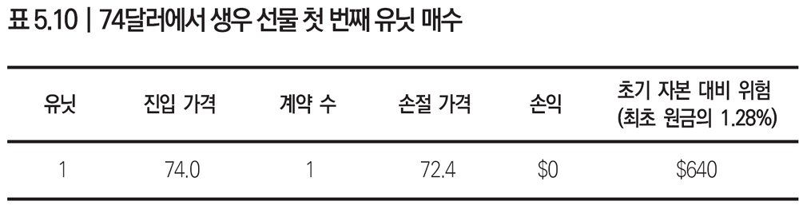
두 번째 유닛 추가 매수
현재 계좌 잔고: 5만 320달러 (5만 달러+첫 번째 유닛의 이익 320달러)
계좌 위험한도는 잔고의 2퍼센트, 즉 1,006.4달러
74.8에서 두 번째 포지션 추가 매수
1N은 0.8이므로 1N값은 320달러
2N은 1.6이므로 2N값은 640달러
매수 계약 수: 1,006.4달러/640달러=1.57, 하지만 소수점 이하를 절사하여 1.0
1N 상승 시 생우 선물 추가 매수, 즉 74.8+0.8=75.6
두 유닛의 손절 가격은 74.8-1.6=73.2
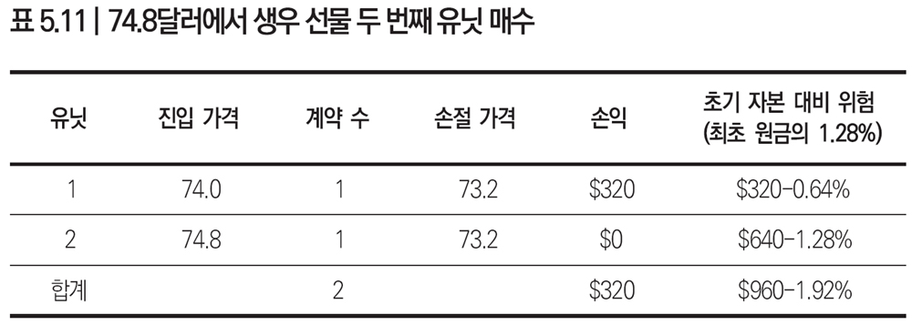
세 번째 유닛 추가 매수
현재 계좌 잔고: 5만 960달러 (5만 달러+첫 번째 유닛의 이익 640달러+두 번째 유닛의 이익 320달러)
계좌 위험한도는 잔고의 2퍼센트, 즉 1,019.2달러
75.6에서 세 번째 포지션 추가 매수
1N이 0.7로 감소, 따라서 1N값은 280달러
2N이 1.4로 감소, 따라서 2N값은 560달러
매수 계약 수: 1,019.2달러/560달러=1.82, 하지만 소수점 이하를 절사하여 1.0
1N 상승 시 생우 선물 추가 매수, 즉 75.6+0.7=76.3
세 유닛의 손절 가격은 75.6-1.4=74.2
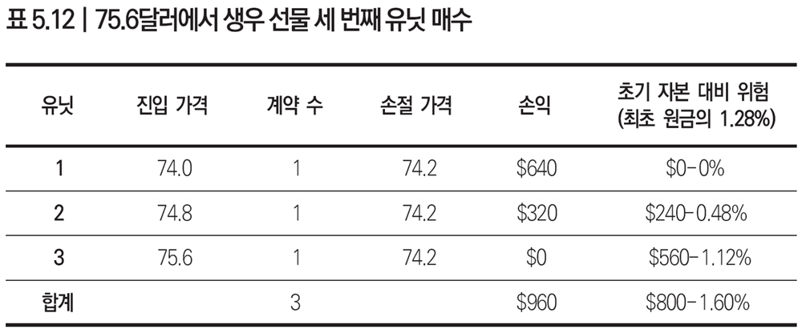
네 번째 유닛 추가 매수
현재 계좌 잔고: 5만 1,800달러 (5만 달러+첫 번째 유닛의 이익 920달러+두 번째 유닛의 이익 600달러+세 번째 유닛의 이익 280달러)
계좌 위험한도는 잔고의 2퍼센트, 즉 1,036달러
76.3에서 네 번째 포지션 추가매수
1N이 0.7이므로 1N값은 280달러
2N이 1.4이므로 2N값은 560달러
매수 계약 수: 1,036달러/560달러=1.85, 하지만 소수점 이하를 절사하여 1.0
1N 상승 시 생우 선물 추가 매수, 즉 76.3+0.7=77.0
네 유닛의 손절 가격은 76.3-1.4=74.9
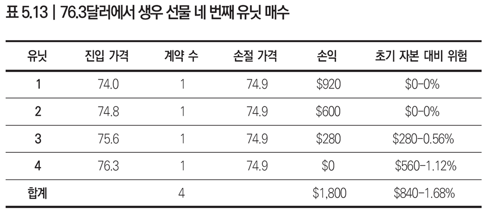
다섯 번째 유닛 추가 매수
현재 계좌 잔고: 5만 2,920달러 (5만 달러+첫 번째 유닛의 이익 1,200달러+두 번째 유닛의 이익 880달러+세 번째 유닛의 이익 560달러+네 번째 유닛의 이익 280달러)
계좌 위험한도는 잔고의 2%, 즉 1,058.4달러
77.0에서 다섯 번째 포지션 추가매수
1N이 0.85로 증가했으므로 1N값은 340달러
2N이 1.70으로 증가했으므로 2N값은 680달러
매수 계약 수: 1,058.4달러/680달러=1.55, 하지만 소수점 이하를 절사하여 1.0
다섯 유닛의 손절 가격은 77.0-1.7=75.3
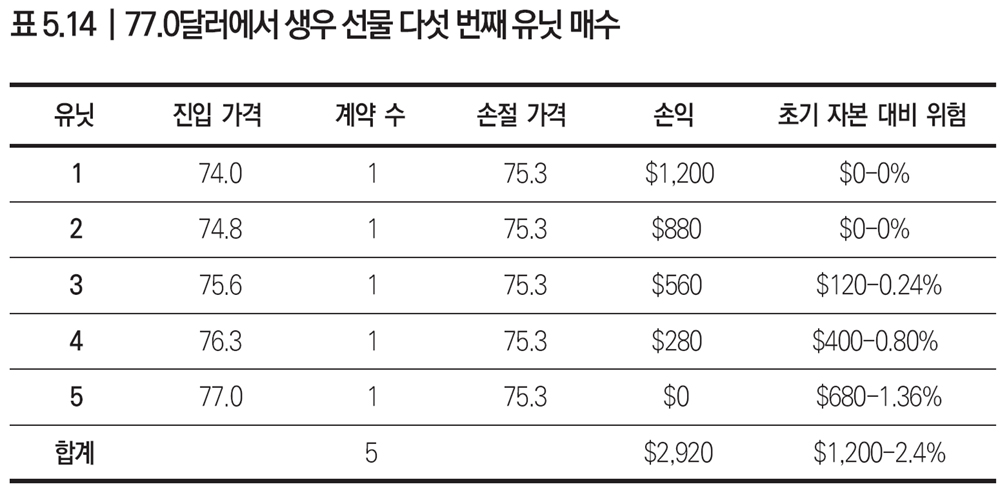
시장이 1N씩 오를 때마다 이에 맞춰 손절 가격도 조정되었다.
포지션 청산
생우 선물가격이 84.5까지 상승해 청산 신호가 발생했다.
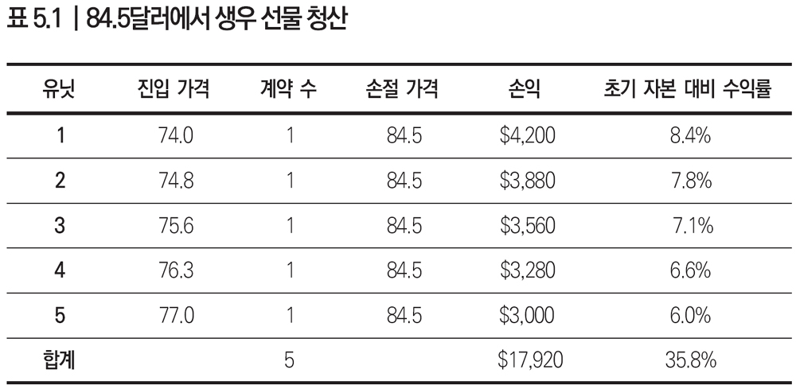
계좌 잔고가 30만 달러라면, 위와 같은 피라미딩 전략을 활용해 캐나다 달러, 미 달러 지수, S&P500 지수, 무연 휘발유, 오렌지 주스, 엔, 스위스 프랑, 금, 대두, 오일, 면화 선물 등에 투자하는 롱 포지션을 다섯 유닛 보유할 수 있다. 터틀 트레이딩 규칙에 따라 전체 포트폴리오의 2퍼센트 내에서 순 롱 포지션 1유닛을 유지하면 된다.
파산 위험: ‘죽을 것인가 살 것인가?’
투자 유닛을 늘리는 공격적인 피라미딩 전략에도 단점은 있다. 큰 추세가 나타나지 않는다면 거짓 돌파 신호에 따른 작은 손실이 계속 발생해 수련생들의 한정된 자본이 아주 빠르게 잠식될 수 있다. 윌리엄 에크하르트는 수련생들이 어떻게 이와 같은 연이은 손실을 관리하고 자본을 지킬 수 있도록 가르쳤을까? 손실이 지속되면 투자 규모를 급격히 줄이도록 했다. 투자 유닛을 줄이는 예방 전략은 나중에 시장이 상승세로 돌아설 때 다시 큰 수익을 올려 빠른 손실 회복 가능성을 증가시킨다.
규칙은 간단하다. 계좌 잔고가 10퍼센트씩 줄어들 때마다 거래 규모를 20퍼센트씩 줄였다. 예컨대 건당 매매 규모가 전체 운용자금의 2퍼센트라고 하고 손실로 계좌 잔고가 11퍼센트 감소했다면 매매 규모를 전체의 1.6퍼센트(2×80%)로 줄인다. 추가 손실로 잔고가 22퍼센트 줄었다면 거래 규모를 다시 20퍼센트 축소해 건당 매매 규모는 전체의 1.28퍼센트(1.6×80%)가 된다.
그러면 거래 유닛을 언제 다시 정상 수준으로 증가시켰을까? 계좌 잔고가 다시 불어나기 시작할 때 늘렸다. 얼 키퍼는 한 동료의 한탄을 기억하고 있었다. “이를 어쩌나, 손실이 워낙 커서 지금부터 100퍼센트 수익을 내야 겨우 본전이야.” 하지만 수련생들은 결국 그해 두둑한 보너스를 받았다. 마침내 시장이 추세를 보이기 시작했기 때문이다. 얼 키퍼가 덧붙였다. “결국 통계 원리대로 들어맞아 모든 시장이 발동이 걸려 움직이기 시작하면 손실을 빠르게 복구할 수 있습니다.”
예컨대 투자원금이 1만 달러인데 계속 손실을 본 뒤 약간의 이익과 손실을 되풀이해 원금이 7,500달러로 줄었다고 가정하자. 이때쯤이면 건당 거래 규모는 초기의 40~50퍼센트 수준으로 줄어들었을 것이다. 그러다 갑자기 모든 게 잘 풀려 잔고가 7,800달러, 8,000달러로 회복되면 투자 규모를 늘리기 시작한다. 터틀 수련생들은 1년 중 11개월 1주 동안 손실을 기록한 뒤 마지막 3주를 잘해 30~40퍼센트 손실을 150퍼센트의 이익으로 바꿀 수 있었다. 부록 4에 나와있는 1984년부터 1988년까지의 월별 성과를 보라. 일단 시동이 걸리면 거침없이 내달렸던 것이다.
터틀 수련생들은 돈을 잃고 있을 때 포지션을 줄임으로써, 손실이 산술급수적으로 증가해 ‘파멸’로 치달을 수 있는 위험을 효과적으로 차단했다.
윌리엄 에크하르트는 수련생들에게 계좌 잔고의 선형적 감소를 크게 걱정하지 말라고 했다. 연속적 손실로 원금이 가파르게 줄어도 큰 추세가 나타나면 수익이 기하급수적으로 늘어나 결국 손실을 만회할 수 있기 때문이다. 원칙을 준수하고 위험을 잘 관리하면서 참고 기다리기만 하면 결국 좋은 성과를 거둘 수 있다.
하지만 수련생들의 하루하루는 단조로웠다. 사무실에 출근하면 이름표가 달린 봉투를 하나씩 받았다. 봉투 안에는 각자의 포지션이 적힌 인쇄물이 들어있었다. 최근 ‘N’값도 있었다. 그렇다. 기본적 수치인 ‘N’값을 직접 계산하느라 이들이 직접 씨름할 이유가 없었다. 물론 윌리엄 에크하르트로부터 ‘N’이 왜 중요한지 어떻게 산출하는지 배웠지만 시간이 소모되는 계산은 다른 사람이 대신해줬다. 수련생들은 봉투를 받아 포지션과 주문 규모가 맞는지 점검만 하면 됐다.
청산 규칙 요약
수련생들은 두 가지 기본적 손절 또는 청산 규칙이 있었다.
1. 2N 손절
2. S1 또는 S2 돌파 신호에 따른 청산
수련생들은 위 두 가지 신호 중 하나라도 나오면 바로 손절해야 했다. 이를테면 어느 시장이든 새로 진입했다고 하자. 그 뒤 곧바로 2N 손절 신호가 나오면 조금 손해를 보고 빠져나온다. 간단하다. 반면 투자 후 시장이 쭉 뻗어나간다고 치자. 이후 이 커다란 추세가 오르락내리락하는 모습으로 바뀌면 S1이나 S2 돌파 신호가 나와 이익을 실현해야 한다.
원칙대로 하면 아쉬운 경우도 있을 수밖에 없다. 당시 아내인 리즈 체블과 함께 일하면서 원칙대로 매매한 데이비드 체블은 이렇게 털어놓았다. “저희는 커다란 수익을 올리면 그 수익으로 아주 공격적으로 투자하고 싶어집니다. 만약 터틀 시스템을 따르지 않아도 됐다면 수익금 전액을 투자했을 겁니다.” 터틀 수련생들은 시장에서 50퍼센트의 수익을 거두더라도 여전히 손절은 이미 정해진 대로 전체의 2퍼센트로 설정해야 했다. 그렇지 않으면 전체의 2퍼센트는 물론 그동안 벌어들인 수익금까지 날릴 수 있기 때문이다.
포트폴리오 구성과 균형 있는 포지션 구축
이 철학은 모든 시장에 적용 가능하다. 다시 말해 유동성이 풍부하고 질 좋은 시장이 존재하고(오늘날에는 이런 시장이 아주 많다) 내재 변동성이 있다면(터틀 방식으로 돈을 벌려면 시장이 움직여야 한다) 어느 시장에서든 터틀처럼 거래할 수 있다.
초기에 터틀 수련생들이 매매한 시장은 다음과 같다.
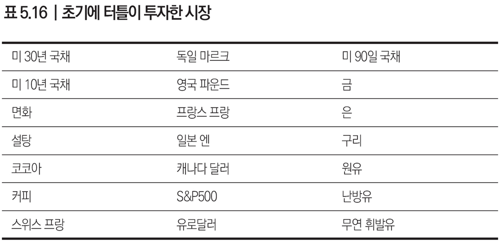
실전매매TIP
투자해야 하는 상품이 특정된 것은 아니다. 오늘날 트레이더들은 아주 다양한 시장(주식, 통화, 채권, 원자재 등)에서 터틀 방식으로 투자한다. 트레이더마다 성과가 다른 이유도 바로 여기에 있다. 초기 자본금이 만병통치약처럼 딱 정해진 것도 아니다. 적은 금액으로 시작해 큰돈을 번 투자자가 있는가 하면, 많은 자본금으로 시작하지만 별 성과를 내지 못한 사람도 있다. 이 규칙 이외에 승자와 패자를 가르는 또 다른 퍼즐 조각은 다음 장에서 다룬다.
하지만 서로 연관성이 아주 높은 시장은 피해야 한다. 쉽게 말해, 발맞춰 걷듯 똑같이 움직이는 경향의 시장들이 있다고 하자. 상관관계가 높은 이런 시장들 위주로 투자 포트폴리오를 구성한다면 터틀 방식의 유닛 위험은 증가한다.
예컨대 다우존스 공업지수와 S&P500지수는 상관관계가 아주 높다. 다우지수와 S&P500에 각각 1유닛씩 투자한다면 각 시장에서 2유닛을 거래한 것이나 마찬가지다.
애플과 델 모두 터틀 포트폴리오에 있다고 가정하자. 이 두 주식은 거의 비슷하게 오르내린다. 터틀 투자 전략에 따르면 애플 1유닛만 투자해야 옳다. 그렇지만 여기에 델을 1유닛 추가한다면 이는 애플을 2유닛 거래하는 꼴이다. 두 주식의 상관관계가 아주 높기 때문이다. 결국 두 주식을 1유닛씩 사게 되면 떠안아야 하는 위험이 두 배가 된다.
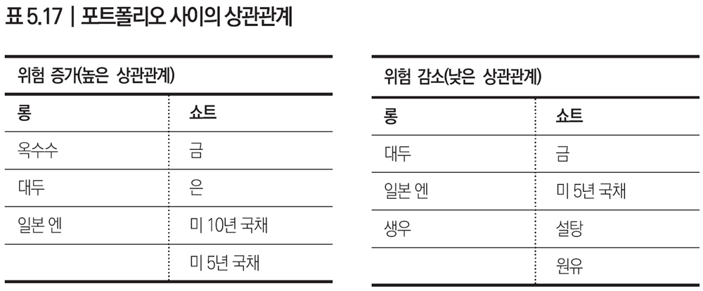
표 5.17의 양쪽 테이블에는 같은 수의 투자 대상이 들어있다. 따라서 양쪽에 같은 수의 유닛을 투자할 경우 서로 별 차이가 없다고 생각하기 쉽다. 하지만 ‘위험 증가’ 쪽 표에 있는 시장들은 상관관계가 서로 높다. 옥수수와 대두, 금과 은, 그리고 두 국채 선물은 연관성이 아주 높다. 따라서 터틀 수련생들은, 왼쪽 표에 있는 일곱 가지 시장 중 서로 상관성이 높은 것들은 같은 종류라고 간주해 최대 네 가지 시장에 투자할 것이다. ‘위험 감소’ 쪽 표에는 상관관계가 낮은 시장들이 있다. 예컨대 일본 엔과 원유는 예나 지금이나 같이 움직이지 않는다.
터틀 수련생들은 포트폴리오에 롱과 쇼트를 함께 섞으면 분산 효과를 높일 수 있다는 사실도 배웠다. 사실 리처드 데니스와 윌리엄 에크하르트는 이들이 롱 유닛뿐만 아니라 쇼트 유닛도 투자하면 더 많은 유닛을 보유할 수 있다는 것을 알고 있었다. 바로 이런 식으로 포지션 규모를 키울 수 있었다. 얼핏 보기에는 과도한 레버리지 투자처럼 보이지만 리처드 데니스와 윌리엄 에크하르트는 터틀 수련생들이 위험관리 가이드라인을 지키며 안전하게 운용하도록 했다.
포트폴리오를 예로 들어 살펴보자. 옥수수, 육우, 금, 스위스 프랑에 투자해 총 4유닛의 롱 포지션을 보유하고 있다고 가정하자. 여기에 영국 파운드, 구리, 설탕에 투자해 총 3유닛의 쇼트 포지션을 추가했다.
이 경우 터틀의 유닛 위험을 계산하려면 먼저 두 포지션의 보유 개수 중 작은 수를 2로 나눈다. 여기서 나온 값을 큰 수에서 빼준다. 따라서 위 예에서 유닛 위험은 2.5[=4-(3/2)]이다. 이것이 바로 터틀 수련생들이 위험을 가중시키지 않고 투자 유닛을 늘린 방법이다.
터틀 수련생들은 왜 다양한 시장에 투자했을까? 큰 추세가 어느 시장에서 나올지 얼마나 지속될지 알 수 없었기 때문이다. 큰 추세를 하나만 놓쳐도 그해 성과가 망가질 수 있다.
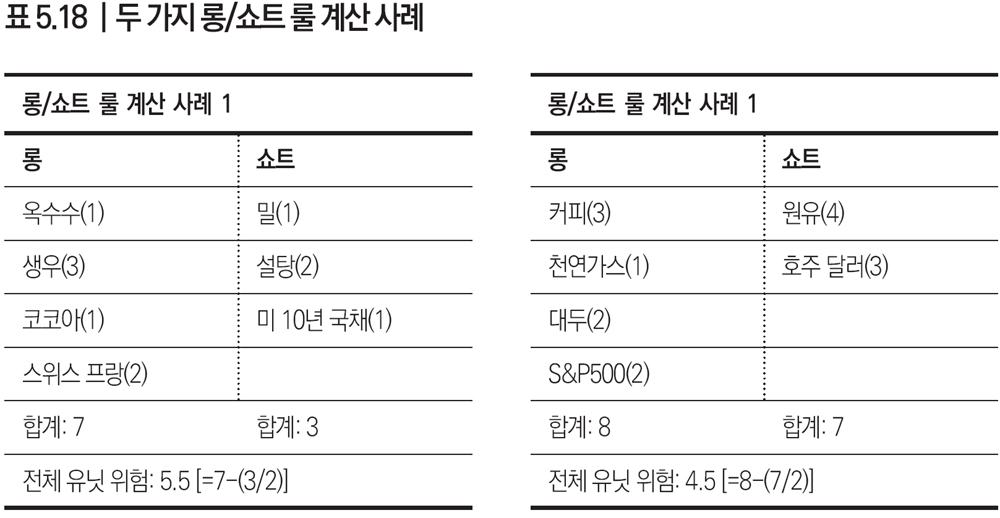
여기까지다. 유니언 리그 클럽에서 진행된 2주간의 수업이 끝났다. 트레이딩 규칙을 익힌 수련생들은 시카고상품거래소 옆 낡은 보험 거래소 안에 있는 리처드 데니스 사무실로 향했다. 이제 이들은 리처드 데니스에게 자금을 받아 매매를 시작하게 되었다.
하지만 터틀 수련생에게는 철학이나 매매규칙보다 더 중요한 의무가 또 있었다. 바로 연습이었다. 물론 식상한 말일 수 있지만 이것이 진실이다. PGA에서 여러 번 우승한 타이거 우즈가 골프를 잘하는 이유를 다음과 같이 갖다붙이는 사람들이 있다. “아주 어릴 때부터 골프를 했어”, “타고난 골프 선수야”, “쟁쟁한 경쟁자들이 많지 않았을 때 우승한 거야.”
정말 그럴까? 타이거 우즈가 뛰어난 성과를 거둔 것은 연습벌레였기 때문이다. 서너 살일 때 자니 카슨 쇼에 나온 그를 보라. 쉬지 않고 연습하고 또 연습했다. 다음은 그가 남긴 유명한 말이다. “흥미로운 사실은, 아무리 뛰어나더라도 항상 더욱 개선할 여지가 있다는 것입니다.” 트레이더든 골퍼든 이처럼 부단히 연습하려는 자세가 매우 중요하다.
의학도 끊임없는 훈련이 있어야 숙달되는 분야다. 채혈을 위해 혈관을 찾는 간단한 작업도 처음에는 제대로 하지 못하는 수련의들이 종종 있다는 사실이 수많은 연구를 통해 밝혀졌다.
혈관 찾는 연습을 하는 수련의처럼 터틀 수련생들에게도 거창한 비결 따위는 없었다. 물론 이들은 시작부터 단지 훈련만 받을 것이라고 기대하지는 않았다(앞으로 어떻게 될지 이들이 어떻게 알 수 있었겠는가?). 하지만 한 터틀이 밝혔듯 ‘비법’ 따위는 없었다. “리처드 데니스는 저희에게 성배를 준 게 아닙니다. 마법 같은 전략은 하나도 없었죠.”
어쨌든 수련생들은 수업을 마치자 곧바로 트레이딩을 시작했다. 그렇지만 큰돈을 벌기에 앞서 험난한 여정을 거쳐야 했다.